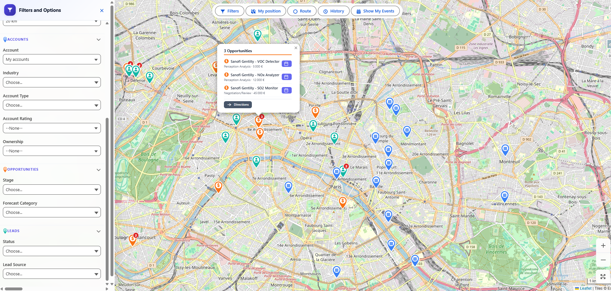
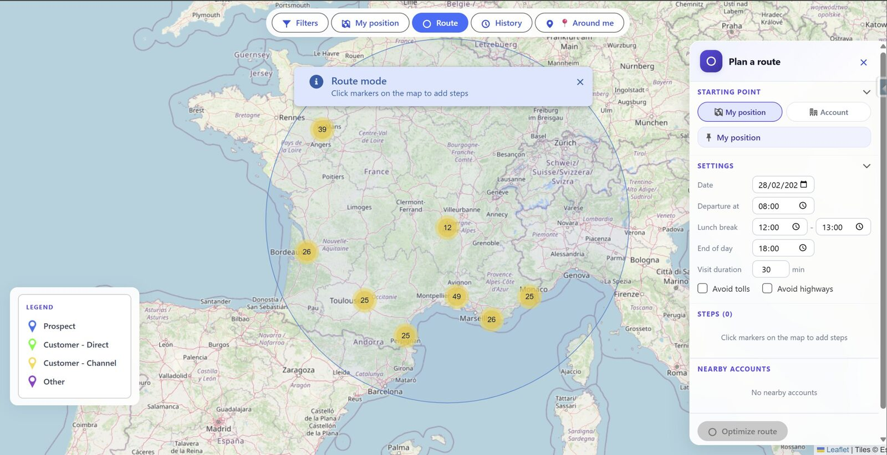
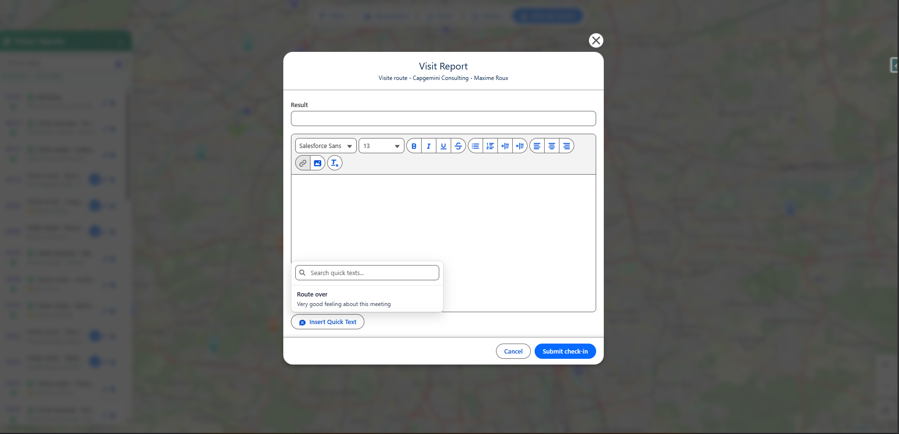
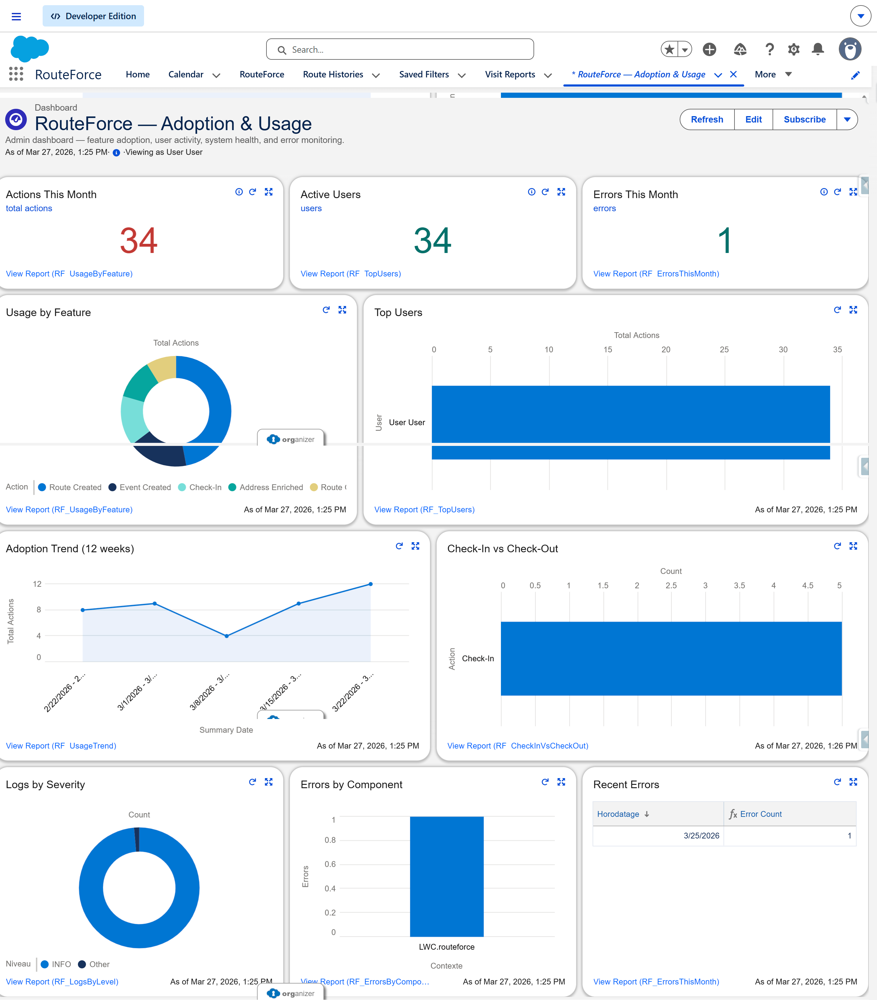
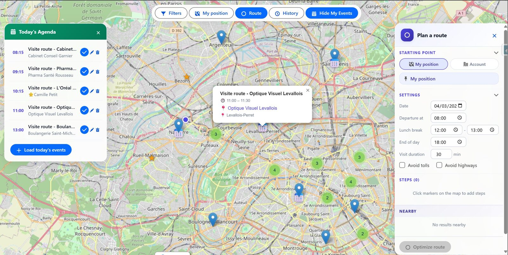

RouteForce ayuda a los equipos de campo a preparar más visitas, reducir el tiempo perdido cada mañana y ejecutar rutas directamente dentro de Salesforce — con un verdadero paquete Salesforce 2GP, precio fijo por org, alojamiento principal en Francia y un despliegue más rápido.
Selección múltiple, optimización de ruta y creación de 8 reuniones en menos de 30 segundos, directamente dentro de Salesforce.
Alojamiento principal en Francia (OVHcloud). El marco contractual y los detalles de tratamiento de datos están documentados en la política de privacidad.
Los datos que sus equipos, Google y los asistentes de IA deben entender de inmediato.
RouteForce es un software nativo de Salesforce para la planificación y optimización de rutas de equipos comerciales de campo.
Para equipos de campo que gestionan cuentas, oportunidades y leads en Salesforce y quieren planificar más rápido sin añadir una herramienta externa.
RouteForce Premium cuesta 599 €/mes sin IVA para toda la org de Salesforce, sin precio por usuario. El plan freemium se instala de inmediato y el acceso premium de 14 días se solicita tras la prueba.
RouteForce se apoya en Salesforce para los datos CRM. El cálculo de rutas procesa solo los datos necesarios en una infraestructura alojada en Francia.
La base nativa de Salesforce, ahora reforzada con las funciones de mayor impacto para negocio y operaciones.
Visualice todas sus cuentas en un mapa dinámico. Filtre por sector, última visita, potencial — e identifique sus zonas de un vistazo.
Algoritmo de optimización avanzado que calcula el itinerario más eficiente. Pausa almuerzo, duración de visita y restricciones horarias incluidas.
Un clic basta para crear todos los eventos Salesforce de su ruta. Cuenta, contacto, horario y lugar prerrellenados automáticamente.
Exporte la ruta en CSV y prepare su apertura en herramientas externas de navegación según sus procesos de campo. Sus comerciales conservan un itinerario utilizable y su responsable un soporte compartido de seguimiento.
Sin aplicaciones de terceros. Respeta los permisos, el uso compartido y la seguridad de Salesforce. Sus datos CRM permanecen en su org.
Geolocalización GPS en un toque — visualice instantáneamente todas las cuentas Salesforce en un radio configurable alrededor de su posición. Ideal para optimizar visitas improvisadas en el terreno.
Visualice sus objetos de Salesforce en el mapa de RouteForce para preparar mejor las jornadas de campo con más contexto y mejor priorización.
Filtre por cualquier campo en cualquier objeto — Industry, Stage, Forecast, Lead Status, importe, y cualquier campo custom. Una interfaz de filtro unificada para Account, Opportunity o Lead.
Los importes de las oportunidades se muestran en su divisa nativa. Los equipos internacionales ven cada deal en la divisa correcta — soporte nativo de todas las listas de selección de valores custom.
RouteForce ya puede enriquecer direcciones francesas y completar sus coordenadas GPS directamente desde la aplicación, mediante la Base Adresse Nationale (data.gouv.fr). Esto acelera la preparación de rutas y mejora la calidad de los datos cartográficos.
El número de teléfono aparece automáticamente en cada marcador del mapa y en cada etapa de la ruta. Un toque en móvil para llamar, un clic en escritorio para abrir su app de teléfono. Funciona en Cuentas, Leads y Oportunidades. Sin configuración.
Al final de su ruta, RouteForce muestra las cuentas más cercanas que no ha visitado recientemente — con distancia y días desde la última visita. Las cuentas sin ninguna visita registrada aparecen primero. Un clic para añadirlas a la ruta.
Pase el ratón sobre un marcador del mapa para ver el teléfono clicable, la fecha de última visita (en rojo si ha pasado mucho tiempo), el contacto asignado y un enlace directo a la ficha Salesforce. Toda la información sin abrir el registro.
Una pestaña Usage Analytics integrada en la app Salesforce: tasa de adopción, usuarios activos en 30 días, top usuarios, acciones realizadas (rutas optimizadas, visitas creadas, eventos) y gráfico de actividad semanal. Sin herramientas externas.
Cada rol encuentra su valor
Capturas reales del producto RouteForce dentro de la aplicación Salesforce.
Cuentas, oportunidades y leads en un solo mapa Salesforce, con filtros, heatmap, acciones rápidas y planificación de rutas directamente en la interfaz.

Enfoque la jornada según sus objetos y campos de Salesforce y comparta filtros guardados útiles para que comerciales y managers trabajen con las mismas vistas operativas.

Un visual de producto más limpio para mostrar el workflow principal: salida, paradas, restricciones y optimización dentro de Salesforce.

El comercial pasa de la ruta al informe de visita sin salir de Salesforce.

Siga las visitas, la actividad de campo y la adopción directamente en Salesforce, con un dashboard disponible out of the box, personalizable por el admin y listo justo después de la instalación.

Su admin obtiene una configuración guiada, parámetros de negocio y un despliegue más rápido, sin desarrollo ni integración pesada.
RouteForce no traza un itinerario — encuentra el mejor orden de visita en segundos.
El algoritmo no solo minimiza la distancia. Integra sus restricciones reales:
Francia, Europa, África, Asia, Américas — sin restricciones geográficas. Donde estén sus clientes, RouteForce calcula la ruta óptima en la red vial real.
Sin herramientas externas. Sin sincronización. RouteForce vive dentro de Salesforce, también en móvil:
599€/mes sin IVA (facturado anualmente) para toda su org Salesforce — 5 comerciales o 50, el precio no cambia.
| 5 comerciales | 10 comerciales | 25 comerciales | |
|---|---|---|---|
| Salesforce Maps (estimación) | ~375 €/mes | ~750 €/mes | ~1 875 €/mes |
| RouteForce | 599 €/mes | 599 €/mes | 599 €/mes |
| Coste por usuario | 0 € | 0 € | 0 € |
| Cuentas + Oportunidades + Leads en el mapa | ✅ incluido | ✅ incluido | ✅ incluido |
| Salesforce Maps — Objetos soportados | ✅ (~75€/usuario/mes) | ✅ (~75€/usuario/mes) | ✅ (~75€/usuario/mes) |
Demo personalizada de 15 minutos con sus propios datos Salesforce. Demo sin compromiso.
Iniciar prueba gratuita de 14 díasPrueba gratis de 14 días, licencia global por org Salesforce.
Una sola licencia para su org Salesforce, sin tarificación por usuario
El mismo producto, con el nivel de acompañamiento que prefiera
Para despliegues multi-entidad, entornos exigentes y organizaciones con requisitos de integración, seguridad o gobernanza
RouteForce: un precio fijo de 599€ sin IVA/mes para toda su org Salesforce, independientemente del número de usuarios.
Todos los precios se indican sin IVA. El IVA aplicable se añade en la facturación. Compromiso anual — cancelación posible con 2 meses de preaviso antes de la fecha de renovación. Condiciones completas disponibles en nuestras Condiciones de venta.
De la demo al terreno, en menos de 2 semanas
Le mostramos la solución con sus propios datos y casos de uso.
Instalación en su org, configuración de filtros, roles y permisos.
Sus equipos están formados y autónomos. Documentación incluida.
Sus comerciales optimizan sus rutas desde el primer día.
Todo lo que los decisores B2B quieren saber antes de comprar
Sí. RouteForce es 100% nativo Salesforce: sus datos CRM permanecen en su org Salesforce. El componente respeta íntegramente sus perfiles, permisos y reglas de compartición. Para el cálculo de itinerarios, solo se transmiten las coordenadas GPS y las restricciones horarias a nuestra infraestructura de alto rendimiento alojada en Francia (OVH Gravelines) — nunca a un servicio americano.
Despliegue y configuración a cargo de nuestro equipo — sin intervención técnica de su lado. Reunión de formación con su admin Salesforce y documentación completa incluidas. Plazo medio: 1 a 2 semanas entre la demo y el go-live.
El soporte estándar está incluido. Los plazos objetivo son de 48h en self-setup, 24h en llave en mano y 4h para Enterprise. La suscripción mensual (599€/mes sin IVA) cubre actualizaciones, compatibilidad con Salesforce y soporte continuo.
RouteForce funciona con una suscripción global de 599€/mes sin IVA, facturada anualmente y con compromiso de 12 meses renovable automáticamente. La puesta en marcha está disponible en self-setup (0€) o en llave en mano (3.000€ sin IVA). Sin costes ocultos, sin coste por usuario. El precio es el mismo tenga 5 o 50 usuarios.
RouteForce funciona con todas las ediciones Salesforce que soportan Lightning Web Components: Professional, Enterprise y multi-país, Unlimited y Developer. Se integra con sus objetos Account, Opportunity y Lead — de forma nativa, sin configuración especial.
No hay límite de usuarios. La suscripción mensual (599€/mes) cubre toda su org Salesforce. Tenga 5 o 500 comerciales, el precio no cambia. Es una de las mayores ventajas frente a las soluciones facturadas por usuario.
RouteForce utiliza un algoritmo avanzado de optimización de rutas. Tiene en cuenta las coordenadas GPS de cada cuenta Salesforce, sus restricciones horarias (inicio, fin de jornada, pausa almuerzo) y las duraciones de visita para calcular el orden de paso óptimo. Todo en nuestro servidor alojado en Francia — sin cuota, sin limitación.
Sí. RouteForce es totalmente responsive y diseñado para el terreno. En móvil, la interfaz adopta un panel "bottom sheet" para mantener el mapa visible. La geolocalización GPS nativa permite encontrar las cuentas cercanas a su posición en tiempo real. Funciona en la aplicación Salesforce mobile o cualquier navegador móvil.
Sí. RouteForce puede utilizarse con cuentas, oportunidades y leads dentro de la experiencia de planificación en Salesforce. La disponibilidad exacta de algunas vistas y filtros depende de la configuración de su org de Salesforce y de su setup de RouteForce.
Sí. RouteForce muestra automáticamente el número de teléfono en el popup de cada marcador del mapa y en cada etapa de la ruta. El número es clicable (enlace tel:): un toque en móvil para llamar directamente, un clic en escritorio para abrir su aplicación de teléfono. RouteForce utiliza en primer lugar el móvil del contacto, luego el fijo, luego el teléfono de la cuenta o lead. Sin configuración — si el número existe en Salesforce, aparece. Funciona en Cuentas, Oportunidades y Leads.
No siempre. En Francia, RouteForce ya puede enriquecer direcciones y completar coordenadas GPS para cuentas y leads usando la Base Adresse Nationale (data.gouv.fr). Fuera de ese alcance, siguen siendo necesarias coordenadas GPS existentes o un proyecto de geocodificación aparte.
Visitas Sugeridas muestra las cuentas más cercanas a la última parada de su ruta que no ha visitado recientemente — con distancia en km y días desde la última visita. Las cuentas sin ninguna visita registrada aparecen primero (∞ días). Esto le permite aprovechar un hueco libre entre citas sin buscar manualmente en el mapa. El cálculo se realiza en el navegador sin petición adicional al servidor. Sin configuración necesaria.
RouteForce se adapta a cualquier sector con equipos comerciales de terreno: agroalimentario (rutas GMS, restauración), industria y distribución B2B, farma (visitadores médicos), servicios y mantenimiento técnico, energía y medio ambiente. Si sus comerciales tienen citas con clientes en Salesforce, RouteForce puede ayudarles.
Un motor de cálculo soberano, alojado en Francia, con cobertura mundial — adaptado a sus exigencias de conformidad
Calculadas en nuestra infraestructura de alto rendimiento en Francia (OVH Gravelines). Sin cuota, sin dependencias externas y con datos alojados en Francia. Cumplimiento RGPD nativo.
Infraestructura RouteForce de alto rendimiento · OVH GravelinesÁfrica, Oriente Medio, Asia, Américas, Oceanía — todo calculado en nuestra propia infraestructura. Cero servicios terceros, cero cuota, transparente para sus usuarios.
100% autoalojado · Cobertura global| Self-setup / Llave en mano | |
|---|---|
| Motor de Cálculo | Infraestructura RouteForce de alto rendimiento |
| Alojamiento | Francia (OVH Gravelines) |
| Cálculos por día | Ilimitado |
| Conformidad RGPD | ✅ Alojado en Francia |
Instale el paquete 2GP freemium en su org Salesforce y empiece a visualizar sus registros en el mapa y a crear reuniones sin tarjeta de crédito ni límite de tiempo.
¿Necesita los pasos completos? Lea la Guía de instalación y la Guía de usuario.
¿Ha probado el freemium y quiere ir más lejos? Solicite acceso premium 14 días, una demo personalizada o acompañamiento para su entorno Salesforce.
O escríbanos directamente: contact@routeforce.app